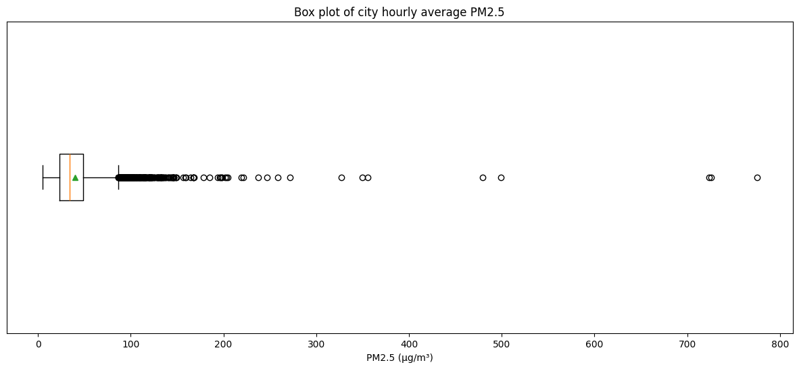
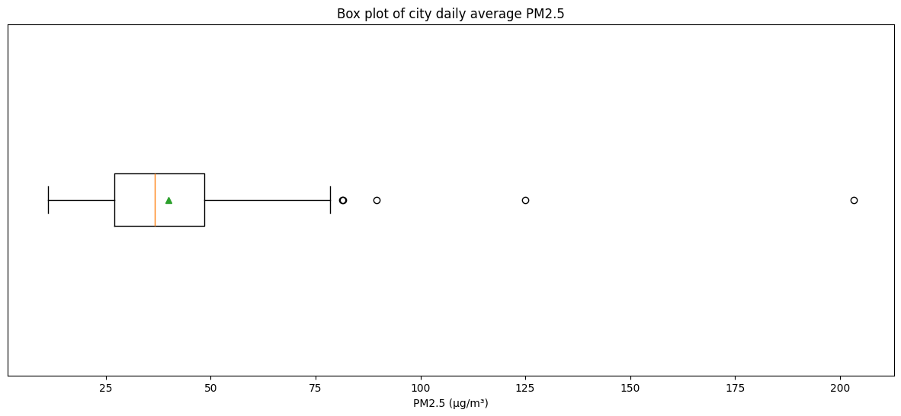

In this tutorial, we will take a monitoring data from a single city (Addis Ababa) and perform basic data analysis required to read the air quality of the city in an informed way.
11.1 Preparing the dataset
This excel file has multiple sheets. Each sheet has houurly data on PM2.5 from each station. The sheet names represent the name of station.
import pandas as pddata = pd.read_csv('data/AddisAbaba_hourly_stations_2024.csv')data.head()
Its obvious that at a given hour, different stations report different concentrations. The variation between these concentrations is also an useful measure. Its also useful to know the number of stations used to calculate these statistics.
We can see that most hourly averages of the city fall within a narrow range, but there are a few exceptional spikes. We can use percentiles and box-plots to represent them.
# 5 percentile - city hourly averagecity_hourly['pm25_avg'].quantile(0.05)
14.274052678571428
# 95 percentile - city hourly averagecity_hourly['pm25_avg'].quantile(0.95)
83.66718571428571
plt.figure(figsize=(15, 6))plt.boxplot(city_hourly['pm25_avg'], vert=False, showmeans=True)plt.xlabel("PM2.5 (µg/m³)")plt.yticks([],[])plt.title("Box plot of city hourly average PM2.5")plt.show()

11.3 City Daily Statistics
When we have station hourly data, it is better to use that to calculate city daily statistics. If we use city hourly averages to calculate daily average, each hour’s average gets equally weighted. But we know that if an hour’s average is calculated from more number of stations, it is better. Hence, City average PM2.5 concentration on any day is the average of all station hourly values on that day.
We can apply W.H.O’s Air Quality Standards at daily statistics. W.H.O recommended a daily average level of 15 µg/m³ for PM2.5 As per W.H.O, a city should meet these daily averages on 99% of the days. We can see that Addis Ababa meets this target in less than 1% of days.
(city_daily['mean']<15).mean()*100
0.9523809523809524
# 5 percentile - city hourly averagecity_daily['mean'].quantile(0.05)
20.070973771880293
# 95 percentile - city hourly averagecity_daily['mean'].quantile(0.95)
67.27227463787735
plt.figure(figsize=(15, 6))plt.boxplot(city_daily['mean'], vert=False, showmeans=True)plt.xlabel("PM2.5 (µg/m³)")plt.yticks([],[])plt.title("Box plot of city daily average PM2.5")plt.show()

11.4 City Monthly Statistics
We’ll now use the city daily averages data to produce monthly and seasonal statistics. We are thus assuming that each day’s average is equally valid as cities report daily averages officially.
/tmp/ipykernel_3775/594153622.py:5: FutureWarning: The default of observed=False is deprecated and will be changed to True in a future version of pandas. Pass observed=False to retain current behavior or observed=True to adopt the future default and silence this warning.
city_monthly = city_daily.groupby(['year','month'])['mean'].agg(['mean','std']).reset_index().dropna()